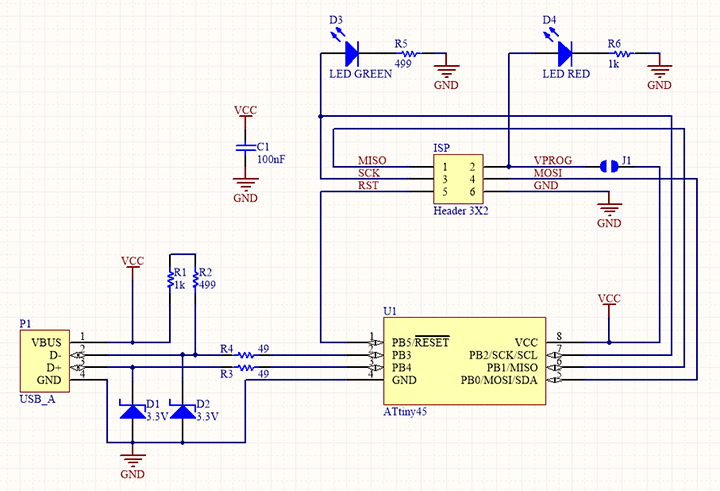
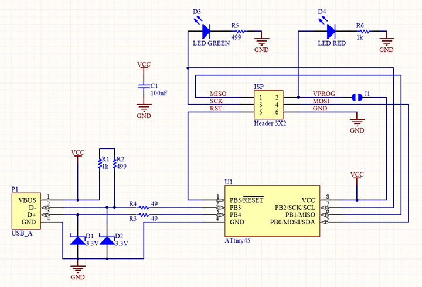
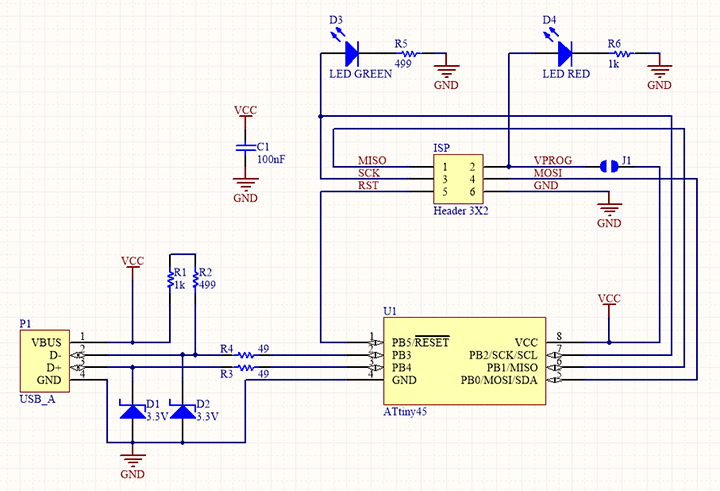

In this week, as Group assignment we had to Characterize the design rules for your PCB production process such as document feeds, speeds, plunge rate, depth of cut (traces and outline) and tooling.Simillarly as Individual assignment i had to make an in-circuit programmer by milling and stuffing the PCB, test it, then optionally try other PCB fabrication process.
Characterisation of PCB milling Machine
In our Lab, we have a SRM20 PCB milling machine whose technical specifications are shown below:
Specifications of the SRM20:
Work Area: 8" x 6" x 2.38"
Loadable Workpiece Size: 8" x 6" x 2.8"
Table Size: 9.14" x 6.17"
Max Tool Size: 1/4" or 6mm.
Spindle Speed: 3000-7000 rpm.
Operating Speed: 1.18 in/sec or 30mm/sec.
Mechanical Resolution: 0.00008in or 0.002mm.
For characterisation of the machine, we downloaded a recommended image from Fab academy website. As we need two files, one for traces and other for Outline Cut. Trace file is available here and the Cut file is available here to download.
First step is to convert these Png files into .rml files, which is the input format for SRM20. We used the MODS tools to convert this. The steps to convert files and setting the parameters is shown below.We opened MODS in browser and from Server program we selected SRM20-PNG PCB module which looks as shown below.
First select the Trace png file to the MODS, and then select the Mill traces (1/64) End mill, as here we need to remove the extra coppers only.Then the most important thing, we have to set origin for X,Y,Z to 0 and In home option we have to give Z as some descent height which is 5 mm in my case, as after completing the task the Jog will goes to that height.Also we had to delete the "Open socket device" module and add a new module "save" to save the .rml file locally.
Then, click on calculate and wait for few minutes after which it asks to download the .rml file. We can also view the mill path as shown below.Now save the .rml file locally in computer.Now we have to do the same procedure for the Outer boundary Cut file. But this time we have to selct for "Mill outline(1/32)" endmill in Mods and then save the file separately. Now we have two different .rml files for mill traces and outlines respectively.
Choose End Mills
After completing the MODS part, now its turn for End mill selection, i have choosen 1/64 inch End mill for Trace milling and 1/32 for Outline milling.
First, we inserted 1/64 end mill into the chalk of the Machine very carefully using the Allen key.Here we have inserted all the way into the chalk as we have to set it again for z axis later.
After inserting the end mill, we placed the single sided copper clad on the machine surface using the double sided adhesive.We make sure that the machine is leveled and the copper clad is cleaned.
Now, we have to set the origin point for X,Y and Z direction using the OEM software "Roland V-Panel".First take the Z axis to a safe location using Z arrows in the software. After it traverse to the X,Y location we want to set as origin and then click on X,Y set as origin. Then Using Z arrow go down to a location very closer to bed but dont touch the surface as it might damage the end mill. Hence here we have to manually open the chalk screw and touch the end mill to material surface and then set Z as zero.
Note: Before clicking on X,Y origin zero, take a screenshot of the Vpanel X,Y values which will be useful to recover the job if any issue will come during milling.
Then click on Cut in the software, and import the trace file(.rml) and click on "Output". Then the machine should start milling automatically. After finishing of trace, we replaced the end mill with 1/32 inch as now we have to do the outline mill. Then After replacing new end mill, just we have to set the Z axis as origin as X,Y is already set.After setting the Z axis, we cut the outline file and the final output is shown as below.
As shown, we observed that, the output is quite good and even the smallest trace is also in place.
FABISP:
The FabISP is an in-system programmer for AVR microcontrollers, designed for production within a FabLab. It allows us to program the microcontrollers on other boards we make.This week i made a FabISP using ATtiny45 microcontroller.So first to make a FabISP i need a schematic which i used to make the PCB. I used the FabISP schematic and PCB design from fabacademy tutorial pages. The trace file can be downloaded from here and the outline file can be downloaded from here.
In my first attempt to mill the PCB, we made a mistake during convesion in MODS.We did set the Z axis in Home as Zero which caused the final position of Jug accidentally to Zeroth position which results like below.
In the second attempt, i was successful and i got a very nice output PCB as shown.
Component Placing:
Now it's turn for component placing on the PCB. before that, first i collected all the required components referring to the schematic as shown below.

Now it's soldering time, i soldered all the components in right place and finally got the final circuit ready.
First i did all the short circuit test and connection checks using multimeter and then inserted it into the USB port of PC. Then the power LED was glowing but it was not recognised by my PC. it was due to unavailability of firmware in it. Next i uploaded firmware into it following the steps below. For this i used my USBasp programmer and Linux system to upload the firmware.First of all i connected all the Six pins of USPasp (MISO, MOSI, SCK, RESET, VCC, GND) to my programmers same pins referring the PCB schematic. After connecting, the circuit looks like below.
Flashing the firmware and Set Fuse bit:
This was the most important part of this week. We also made some mistakes in first attempts. Accidentally we uploaded wrong firmwares which is intended for ATtiny44. Thus it restricted our boards to flash new firmwares again. Our Instructor helps us out here, suggesting us to use a resonator of 20MHZ as per circuit below removing the resistors.The idea is to flash the board using the resonator and after completing flash again re-solder the resistors in place. Another option was to replace the ATtiny45 with a new one.In my board i replaced it with a new one.
I Opened linux terminal to run the following command to install "avrdude". sudo apt install avrdude gcc-avr avr-libc make
Download the firmware source code from here and extract the zip file (on Linux, unzip fts_firmware_bdm_v1.zip). Open your terminal program and cd into the source code directory.
Run "make" command in terminal which will create a hex file inside the code directory named "fts_firmware.hex".
Now i updated the Makefile for the type of programmer we are going to use to program your board.By default, it assumes that we are using a usbtiny which is another FabISP board.In my case i have used a "usbasp" programmer.This can be edited in the line of "Makefile" as shown and save the file.
PROGRAMMER ?= usbasp
After this, connect the FABISP to the USBASP and connect the USBASP to the PC. Now the LED in FABISP should glow otherwise check the jumper bridge is soldered or not. Now we can run the command "dmesg" in terminal to see all the connected devices, where our "usbasp" must be there.
Now run "make flash" command in the terminal which should run successfully and it will flash the .hex file into the programmer.
The,run "make fuses" command in the terminal which should run successfully and it will set all the fuses except Reset disable pin in the programmer.
Testing the Programmer
After completing all the above steps now it's time to test the FABISP. For this i connected the FABISP to my USB and then ran "lsusb" which shown all the devices connected to my PC. In the list my device is also showing in the name "Multiple Vendors USBtiny".That means it's working.
Blow the Reset fuse
The final step is to Reset pin, so that it can't be reprogrammed anymore. To do that, run "rstdisbl" which will disable the reset pin in the programmer. Now my Programmer is ready to program another device.


 



{kind=link}
{kind=link}
{kind=link}
{kind=link}